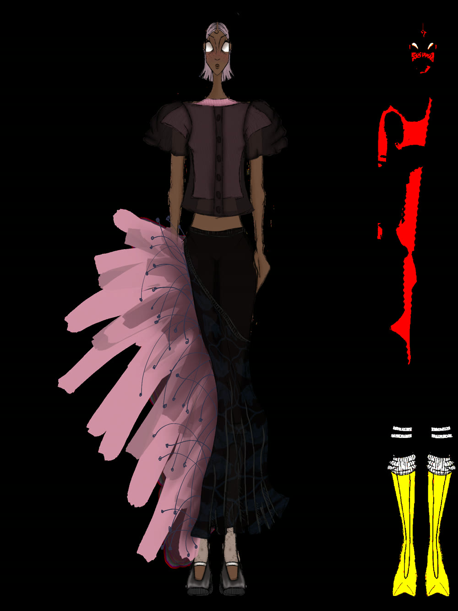
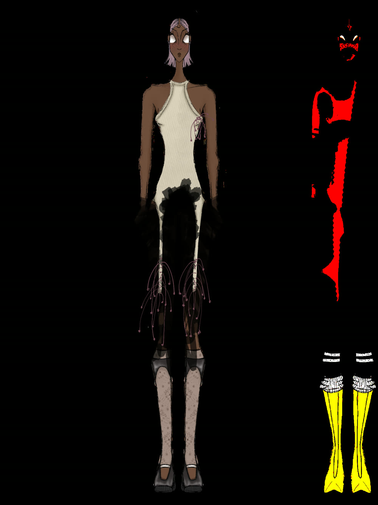
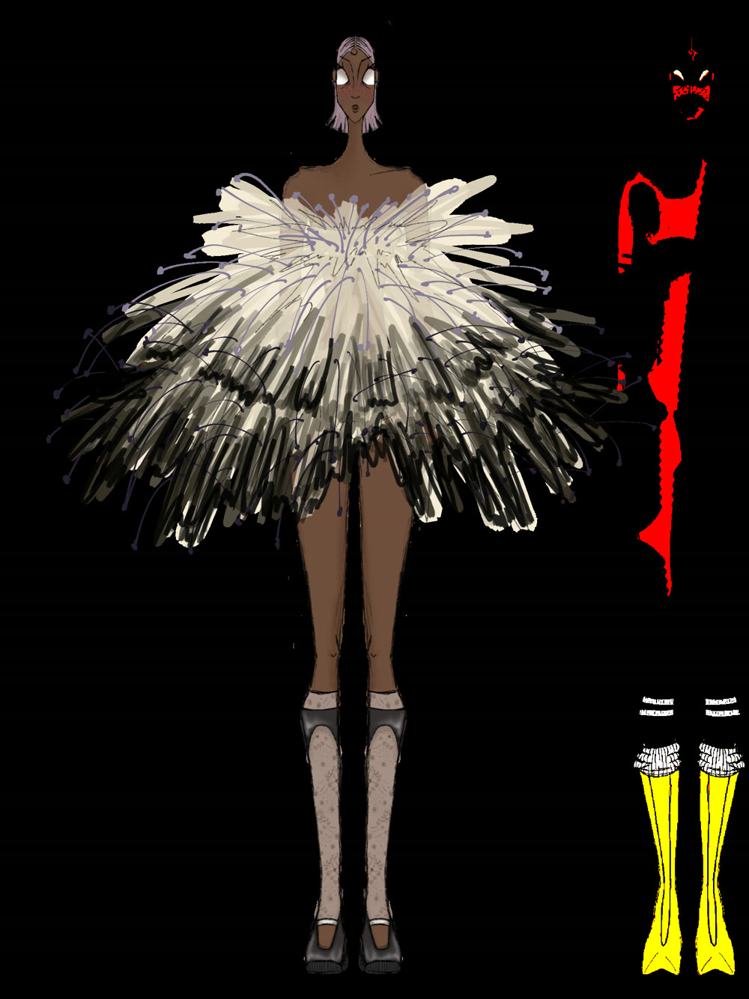
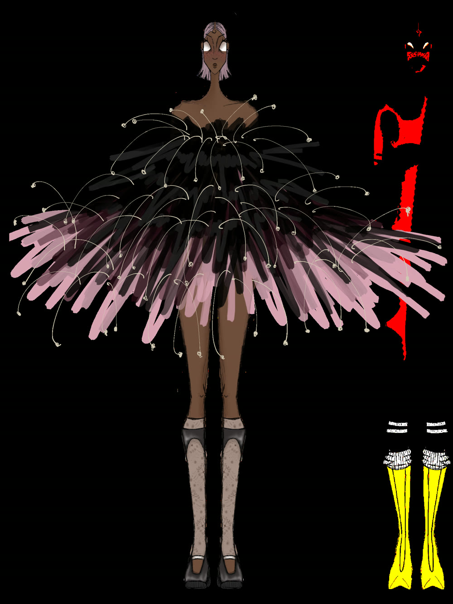
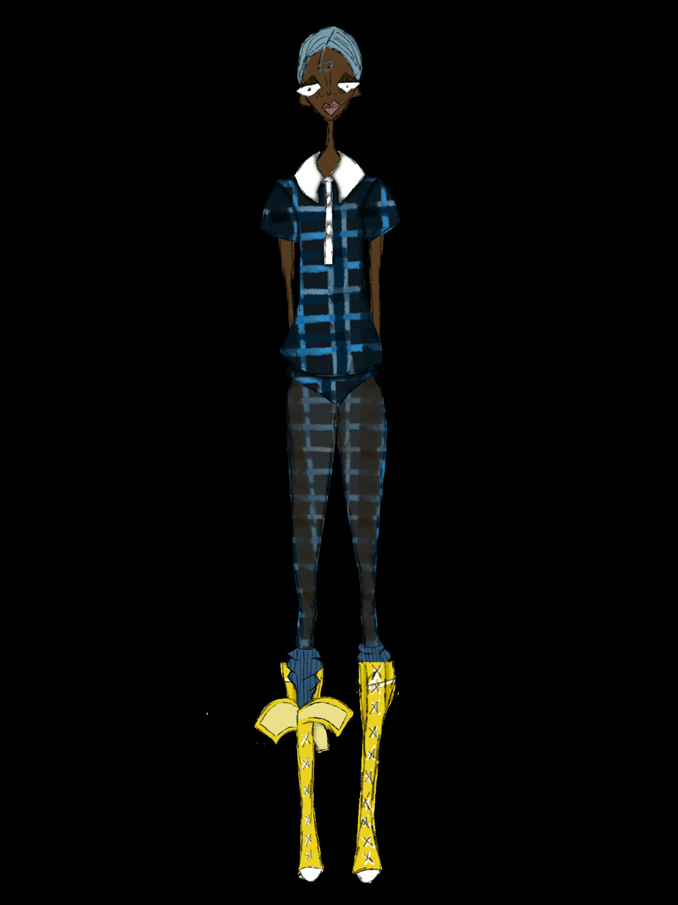
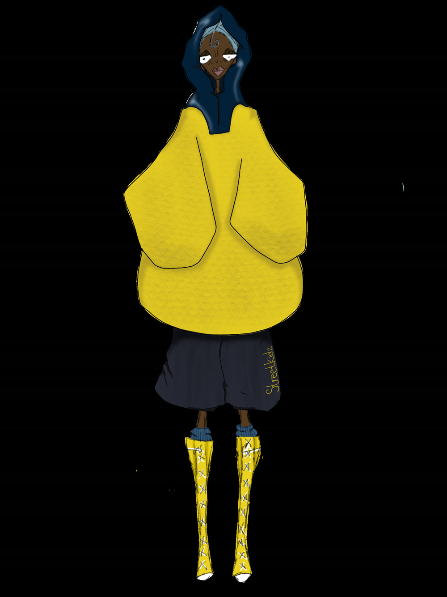
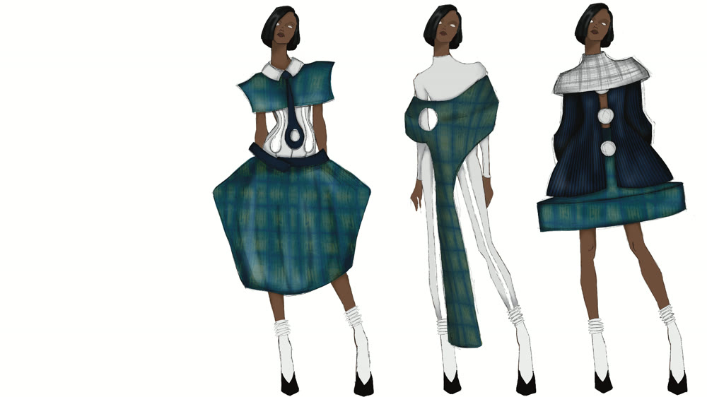
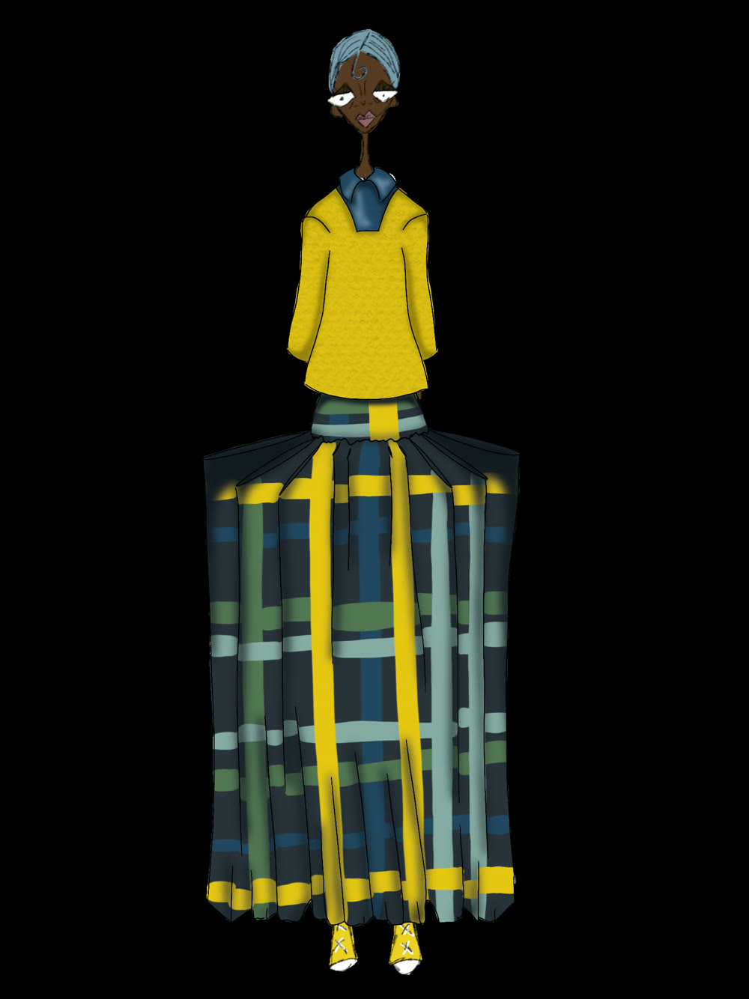

The Pleat
An oversized felted-plaid knit over a pleated uniform skirt — the schoolgirl staple, blown out of proportion.
Act IThe Sketch

Act IIThe Toile

Act IIIThe Look

Senior Collection — 2026
A collection that redefines the modern school uniform and asks whether uniformity is more important than individuality. Drawing on the original Christ's Hospital uniform and Amaury's own childhood dress code, every look carries a deliberate dress-code violation. Each design is shown in three acts, side by side — the first sketch, the working toile, and the finished look.
An oversized felted-plaid knit over a pleated uniform skirt — the schoolgirl staple, blown out of proportion.
An unzipped plaid overshirt and boxers-turned-shorts — sagging in the back, exactly as the dress code forbids.

![Sketchbook spread titled Code[2KD] First Offense with fabric and button tests](assets/offense-toile.jpg)

A giant tie turned hood — uniform neckwear reimagined as cover.


Editorial
Code[2KD] worn, sat in, leaned on and lived in — the collection photographed the way a uniform actually gets used.


Illustrations
Before the shears come out, everything lives on paper — croquis, lineups and characters from Code[2KD] and beyond.








About
Amaury Sanders is a fashion designer and illustrator whose senior collection, Code[2KD], redefines the modern school uniform. Her work moves from expressive character illustration to needle-felted tartans, and she documents every look in three acts — the first sketch, the working toile, and the finished garment — because for Amaury, the process is the point.
“Is uniformity more important than individuality?”


Contact
For commissions, press, collaborations or a closer look at Code[2KD], write directly — every message is read by Amaury.